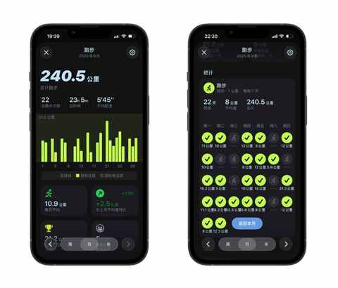
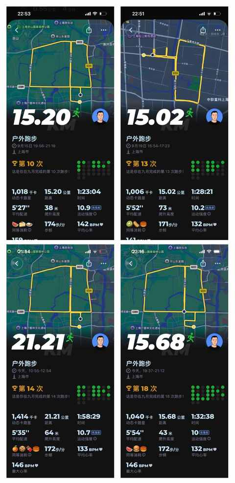
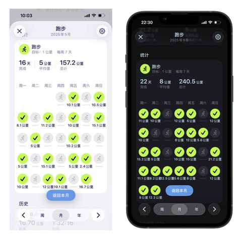
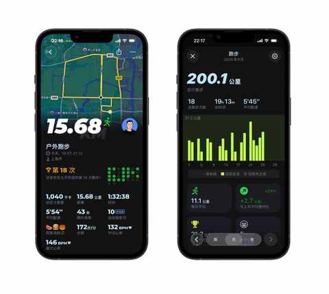
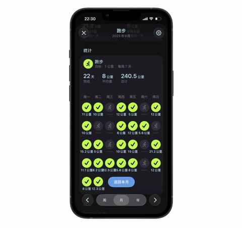

90 年，35 岁，跑步两年半，首次月跑量突破200km是什么体验？
一、为什么要把跑量提到 200km
1️⃣ 想解锁未有过的体验
开始跑步两年半以来，未曾在某个月达到 200km，去年最多的一个月是 176.1km。

2️⃣ 对跑步的认识更深
愈加认识到跑量的重要性，跑量是速度与耐力的基础
当月跑量陡降100km，我才明白“跑量是基础”的真正含义
3️⃣ 备赛需要
10 月和 11 月都有半马比赛，希望其中有一场可以PB，跑到 140
12 月即将解锁人生中首个全马，希望能跑进 4 小时并安全完赛
- 10 月 26 日 桐庐半马
- 11 月 9 日 合肥半马
- 12 月 14 日 福州全马
二、要完成 200km 并不容易
不只是跑步次数的变多，伴随着每次公里数的增加及中长距离训练的加入，完成 200km 并不是一件轻松的事情。
1️⃣ 跑步次数增加
如下图所示，9 月跑了 22 次，单次平均为 10.8km。

2️⃣ 中长距离频次变高
22次中有 1 次半马和 3 次 15km，总计超 66km。

3️⃣ 跑休节奏调整
完全摒弃以往跑一休一的跑休节奏，前三周以跑二休一为主，最后一周在状态良好尝试跑六休一成功。

三、完成 240km是什么体验
1️⃣ 完成目标开心且兴奋
超量20%完成预期目标，最开心的时候是 9 月 25 日晚上刚跑完 15km 回到家查看具体数据的时候，因为在当天晚上跑量就达到 200km，提前 5 天完成既定跑量目标。

2️⃣ 找到节奏之后是一马平川
- 什么时间跑？
- 每次跑多少距离 ？
- 跑完后如何拉伸与恢复 ？
- 长距离如何安排 ？
- 是单排还是和其他跑友一起 ？
- 是在场地跑还是路跑 ？
- ……
诸多问题，都需要有自己的答案，这些答案就是属于自己的节奏。
现在已经能更清晰的知道当天要怎么跑，不用在临跑前再纠结这纠结那，可能再过几个月也能和其他跑者一样严格按照课表去执行跑步计划了。
3️⃣ 长期主义与量力而行
通过下图不难发现，9 月份跑了两次 8km和两次 5km，都是用来调整状态的。

跑之前大腿有点酸在跑的过程中感知到有点累，便减少跑步的时间，及时休息待状态恢复再跑一个长点的距离补回来，坚决不让自己处于一个被动的情况。
4️⃣ 中年人需要挑战和目标
中年人需要时不时提提气，去完成一些大大小小的挑战和目标。
要有长期能坚持的运动，既能补充能量也能身体健康吃嘛嘛香。